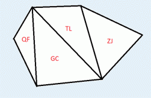

每个输入文件中仅包含一个测试数据。
第一行包含两个由空格隔开的正整数N，N的含义如题目所述。
接下来有N-2行，每行包含三个整数 p,q,r，表示该城市三角形的三个顶点的编号(T国的N个顶点按顺时间方向从1至n编号)。
到了难得的暑假，为了庆祝小白在数学考试中取得的优异成绩，小蓝决定带小白出去旅游~~
经过一番抉择，两人决定将T国作为他们的目的地。T国的国土可以用一个凸N边形来表示，N个顶点表示N个入境/出境口。T国包含N-2个城市，每个城市都是顶点均为N边形顶点的三角形(换而言之，城市组成了关于T国的一个三角剖分)。两人的旅游路线可以看做是连接N个顶点中不相邻两点的线段。

6
1 2 4
2 3 4
1 4 5
1 5 6
44<=N<=200000